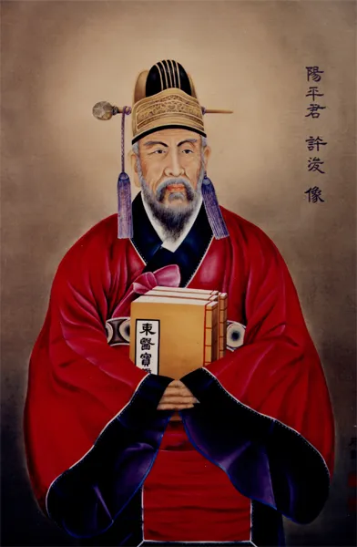

| ... | 이력서 | 허준 | |
|  | |||
| 출생 : 1939년, 중종 33 | |||
| 사망 : 1615년, 광해 7 | |||
| 직업 : 한의사 | |||
| 직업 시작의 계기 : 양반 가문에서 태어나 학문과 조예가 싶었습니다. | |||
| 직업 모토 : "백성을 위한 의학" | |||
| 업적 1 | |||
| 동의보감 저술 | 1596년부터 1613(또는 1601)년 저술을 완료하였다. | ||
| 조선뿐만 아니라 동아시아 의학 발전에 큰 기여를 했으며, 2009년 세계유산에 등재되었습니다. | |||
| 업적 2 | |||
| 이른 나이에 추천으로 급제되었다. | |||
| 미암 유희춘의 기록 상 1573년 정3품 내의원정에 올랐다. | |||
| 1569년 내의원에 들어갔다. | |||
| 업적 3 | |||
| 유례없이 빠른 제수 | |||
| 1569년 세자 광해군의 천연두를 고쳐 종 2품의 가의대부에 제수되었다. |